📘 คู่มือผู้ใช้งานระบบ SoundWave Pass
เอกสารคู่มืออธิบายการใช้งานแบบละเอียดทุกหน้าจอ พร้อมภาพหน้าจอจริงทั้ง 17 หน้าจอ ระบุตำแหน่งปุ่มกด ช่องกรอกข้อมูล หน้าที่การทำงาน และผลลัพธ์ของระบบครบทุกบทบาทผู้ใช้งาน
บทที่ 1
ภาพรวมระบบและบัญชีผู้ใช้งานสำหรับทดสอบ (System Roles & Demo Accounts)
ระบบ SoundWave Pass แบ่งสิทธิ์และหน้าจอการใช้งานออกเป็น 3 ส่วนหลัก เพื่อให้เหมาะกับผู้ใช้งานแต่ละกลุ่ม ดังนี้:
| บทบาทผู้ใช้งาน (Role) | URL / หน้าจอที่ใช้งาน | Username ทดสอบ | Password | หน้าที่และขอบเขตการใช้งาน |
|---|---|---|---|---|
| 1. ลูกค้าทั่วไป (Customer) | /, /concerts/:id, /booking/*, /tickets/* |
สมัครใหม่ หรือ Google Login | ตามที่ตั้งไว้ | ค้นหาคอนเสิร์ต เลือกโซนจากผังฮอลล์ เลือกเก้าอี้รายตัว ผูก LINE รับตั๋ว ชำระเงิน และพิมพ์บัตรที่ระลึก A4 |
| 2. สตาฟฟ์หน้าประตู (Gate Staff) | /team, /scanner |
nam, faye, gate01 |
1234 |
สแกน QR Code บัตรเข้างานด้วยกล้องมือถือ/เว็บแคม โหมดสแกนคิวต่อเนื่อง หรือยิงบาร์โค้ด USB |
| 3. ผู้จัดงาน (Organizer / Admin) | /team, /admin, /admin/insights/* |
owner |
1234 |
ดูสถิติรายได้ เปิด/พัก/ปิดการขาย ล็อกเก้าอี้ VIP คืนเงิน (Refund) ดึงงานจากเรดาร์คอนเสิร์ต และส่งตั๋ว LINE ซ้ำ |
บทที่ 2
แถบเมนูหลัก หน้าแรก การเข้าสู่ระบบ และประวัติตั๋วของฉัน
2.1 หน้าแรกและแถบเมนูนำทางด้านบน (HomePage & Global Navbar)
URL: /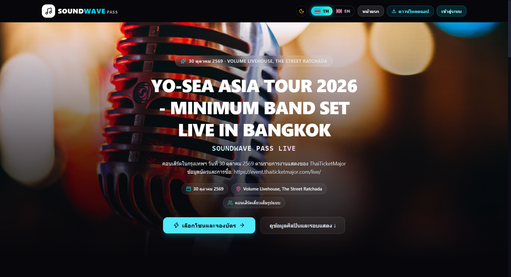
| ชื่อปุ่ม / ไอคอน | ตำแหน่งบนหน้าจอ | หน้าที่การทำงาน | ผลลัพธ์เมื่อกด |
|---|---|---|---|
| 🎵 SOUNDWAVE PASS | มุมซ้ายบนสุดของแถบเมนู | ปุ่มกลับหน้าแรกหลักของเว็บไซต์ | เปลี่ยนหน้ากลับมายังหน้าแรก (/) ทันที |
| 🌙 / ☀️ สลับธีมสี | แถบขวาบน (ข้างปุ่มภาษา) | สลับโหมดหน้าจอมืด (Dark Mode) และสว่าง (Light Mode) | เปลี่ยนโทนสีพื้นหลังและการ์ดทั่วทั้งเว็บไซต์ทันที และจดจำค่าไว้ในเบราว์เซอร์ |
| 🇹🇭 TH / 🇬🇧 EN | แถบขวาบน | สลับภาษาของระบบระหว่าง ภาษาไทย และ ภาษาอังกฤษ | แปลข้อความปุ่ม เมนู และคำอธิบายทุกหน้าเป็นภาษาที่เลือกทันที |
| ⬇ ดาวน์โหลดแอป | แถบขวาบน | เปิดหน้าต่างดาวน์โหลดแอปมือถือ Android APK และโปรแกรม Desktop | แสดงป๊อปอัพ QR Code และปุ่มดาวน์โหลดไฟล์ติดตั้งลงเครื่อง |
| เข้าสู่ระบบ | มุมขวาบนสุด | เปิดหน้าต่างเข้าสู่ระบบหรือสมัครสมาชิกสำหรับลูกค้า | แสดงหน้าต่างป๊อปอัพเข้าสู่ระบบ (ดูภาพที่ 2.2) |
| ⚡ เลือกโซนและจองบัตร → | กลางแบนเนอร์คอนเสิร์ตเด่น (Hero Banner) | เข้าสู่หน้าผังเลือกโซนที่นั่งของคอนเสิร์ตเด่นทันที | นำทางไปยังหน้า /booking/zone-select?concertId=... |
| ดูข้อมูลศิลปินและรอบแสดง ↓ | ข้างปุ่มจองบัตรบนแบนเนอร์ | ดูรายละเอียดคอนเสิร์ต ตารางเวลา และรายชื่อศิลปิน | นำทางไปยังหน้ารายละเอียดคอนเสิร์ต (/concerts/:id) |
2.2 หน้าต่างเข้าสู่ระบบและสมัครสมาชิกสำหรับลูกค้า (Customer Auth Modal)
Modal: AuthModal.jsx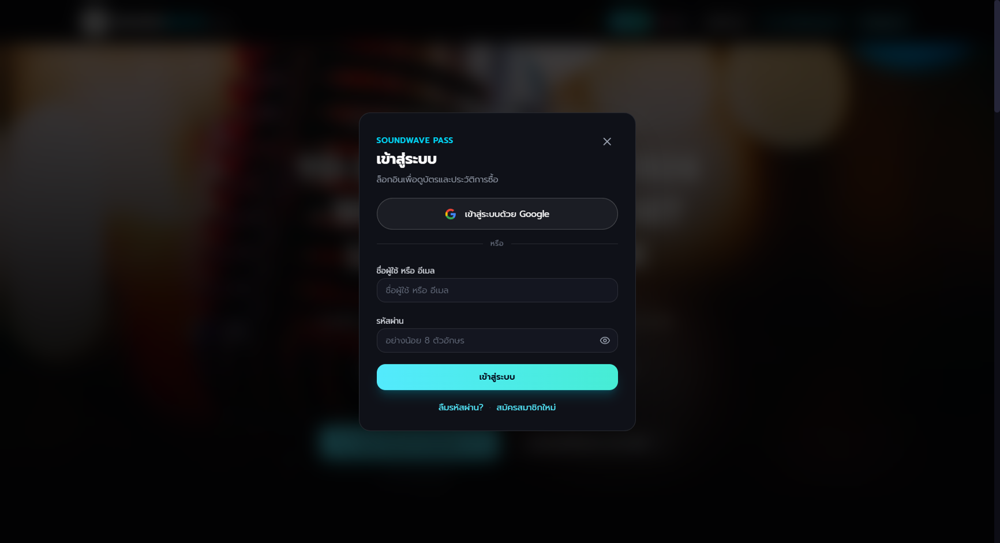
| ชื่อปุ่ม / ช่องกรอก | ตำแหน่งในหน้าต่าง | หน้าที่การทำงาน | ผลลัพธ์เมื่อกด |
|---|---|---|---|
| 🇬 เข้าสู่ระบบด้วย Google | ปุ่มด้านบนของฟอร์ม | ล็อกอินหรือสมัครสมาชิกอัตโนมัติด้วยบัญชี Google | เปิดป๊อปอัพยืนยันบัญชี Google และเข้าสู่ระบบทันทีโดยไม่ต้องจำรหัสผ่าน |
| ช่องชื่อผู้ใช้ หรือ อีเมล | กลางฟอร์ม | กรอก Username หรืออีเมลที่ใช้สมัครสมาชิก | รับข้อมูลสำหรับตรวจสอบสิทธิ์ผู้ใช้ |
| ช่องรหัสผ่าน + ปุ่มดวงตา 👁️ | ใต้ช่องอีเมล | กรอกรหัสผ่าน (กดไอคอนดวงตาเพื่อดูตัวอักษรที่พิมพ์ได้) | สลับการแสดงรหัสผ่านระหว่างจุดซ่อนรหัสกับตัวอักษรจริง |
| ปุ่ม เข้าสู่ระบบ (สีฟ้า) | ด้านล่างฟอร์ม | ส่งข้อมูลยืนยันตัวตนเข้าสู่ระบบ | ปิดหน้าต่างป๊อปอัพ แสดงชื่อผู้ใช้บนแถบเมนู และปลดล็อกการจองบัตร |
| ลืมรหัสผ่าน? · สมัครสมาชิกใหม่ | ลิงก์ด้านล่างสุดของป๊อปอัพ | สลับไปหน้าตั้งรหัสผ่านใหม่ หรือหน้าสร้างบัญชีลูกค้าใหม่ | เปลี่ยนแบบฟอร์มในป๊อปอัพตามโหมดที่เลือกทันที |
2.3 หน้าต่างตั๋วของฉันและประวัติการสั่งซื้อ (My Tickets & Purchase History Modal)
Modal: PurchaseHistoryModal.jsx
| ชื่อปุ่ม / ช่องกรอก | ตำแหน่งในหน้าต่าง | หน้าที่การทำงาน | ผลลัพธ์เมื่อกด |
|---|---|---|---|
| ช่องค้นหารหัสจอง + ปุ่ม 🔍 ค้นหา | แถบด้านบนของป๊อปอัพ | ค้นหาตั๋วด้วยรหัสใบจอง (เช่น SW-2026-3F4VN) หรือเบอร์โทรศัพท์ |
ดึงข้อมูลตั๋วจากฐานข้อมูลกลางมาแสดงทันที (ใช้กู้คืนตั๋วเมื่อเปลี่ยนมือถือได้) |
| ปุ่มรหัสตั๋ว 🎫 SWP-... | ภายในการ์ดรายการจองแต่ละใบ | เปิดดูตั๋วดิจิทัล QR Code ของที่นั่งใบนั้น | นำทางไปยังหน้า /tickets/:ticketCode พร้อมแสดง QR Code เข้างาน |
| 🗑️ ล้างประวัติในเบราว์เซอร์ | มุมซ้ายล่างของป๊อปอัพ | ลบรายการที่จำไว้ในเครื่องสาธารณะ | ล้างรายการในเครื่องนี้ (ข้อมูลตั๋วจริงในระบบยังอยู่ครบ) |
บทที่ 3
ขั้นตอนการดูรายละเอียดคอนเสิร์ตและเลือกโซน/ที่นั่ง (2-Step Venue Booking)
3.1 หน้ารายละเอียดคอนเสิร์ต ตารางศิลปิน และรายการโซนบัตร (Concert Detail Page)
URL: /concerts/:id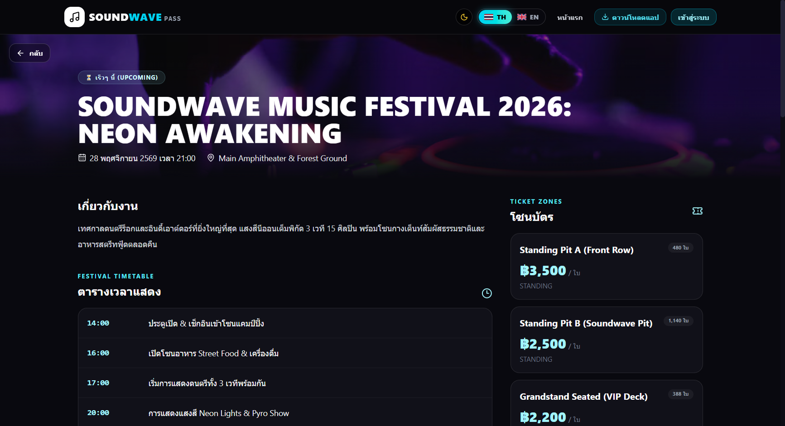
| ชื่อปุ่ม / องค์ประกอบ | ตำแหน่งบนหน้าจอ | หน้าที่การทำงาน | ผลลัพธ์เมื่อกด |
|---|---|---|---|
| 📍 เปิดแผนที่นำทาง (Google Maps) | ใต้ชื่อสถานที่จัดงาน | ดูตำแหน่งฮอลล์จัดแสดงและเส้นทางเดินทาง | เปิดแท็บ Google Maps ไปยังพิกัดสถานที่จัดงานโดยตรง |
| การ์ดโซนบัตร + ปุ่ม เลือกโซนนี้ | คอลัมน์ด้านขวา (รายการโซนและราคา) | เลือกโซนที่ต้องการเพื่อเข้าสู่หน้าผังที่นั่ง | นำทางไปยังหน้า /booking/zone-select พร้อมเลือกโซนนั้นให้ทันที |
3.2 ขั้นตอนที่ 1 (Step 1): คลิกเลือกโซนจากผังสถานที่จัดงานจริง (Interactive Venue Map)
URL: /booking/zone-select (Step 1)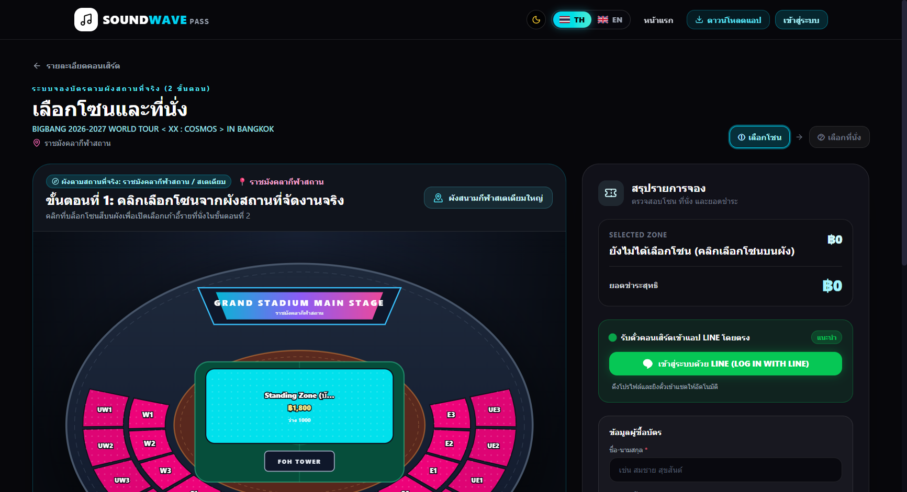
| ชื่อปุ่ม / บล็อกบนผัง | ตำแหน่งบนหน้าจอ | หน้าที่การทำงาน | ผลลัพธ์เมื่อกด |
|---|---|---|---|
| บล็อกโซนสีบนผังฮอลล์ (Standing / VIP / Bowl) | กลางผังจำลองเวที (Stage & Walkway) | คลิกเลือกโซนที่ต้องการจากตำแหน่งจริงหน้าเวที | เปลี่ยนเข้าสู่ ขั้นตอนที่ 2 (ผังเลือกเก้าอี้รายตัว) ทันที |
| ปุ่ม ① เลือกโซน / ② เลือกที่นั่ง | มุมขวาบนเหนือผังงาน | แสดงสถานะขั้นตอนปัจจุบันของการจองบัตร | ช่วยให้ทราบว่ากำลังอยู่ในขั้นเลือกโซน หรือขั้นเลือกเก้าอี้ |
3.3 ขั้นตอนที่ 2 (Step 2): เลือกเก้าอี้รายตัว ผูก LINE และกรอกข้อมูลผู้ซื้อ
URL: /booking/zone-select (Step 2)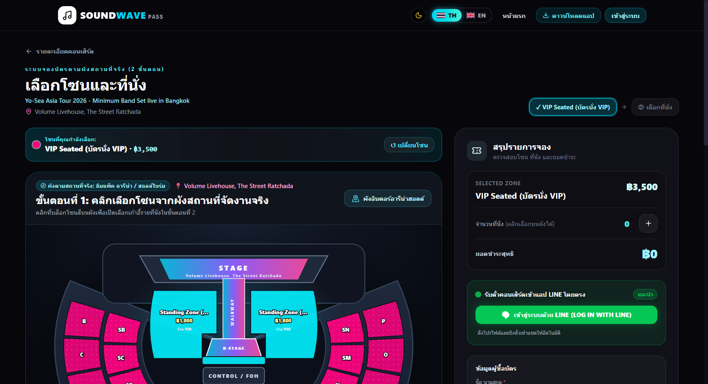
| ชื่อปุ่ม / ช่องกรอก | ตำแหน่งบนหน้าจอ | หน้าที่การทำงาน | ผลลัพธ์เมื่อกด |
|---|---|---|---|
| ← เปลี่ยนโซนที่นั่ง | มุมซ้ายบนของกรอบผังเก้าอี้ | ย้อนกลับไปผังฮอลล์รวม (Step 1) เพื่อเปลี่ยนโซน | ล้างที่นั่งที่เลือกไว้ชั่วคราวและแสดงผังฮอลล์รวม |
| ปุ่มเก้าอี้ A-01 ถึง G-14 (3 ปีก: ซ้าย/กลาง/ขวา) | กลางผังที่นั่ง | คลิกเลือกเก้าอี้ที่ต้องการ (เลือกได้สูงสุด 6 ที่นั่งต่อครั้ง) |
• เก้าอี้ว่าง: เปลี่ยนเป็นสีนีออนพร้อมเครื่องหมาย ✓ และคำนวณราคารวมอัตโนมัติ• เก้าอี้สีทึบ ( –): มีผู้จองแล้ว ไม่สามารถกดซ้ำได้
|
| 💬 เข้าสู่ระบบด้วย LINE (LOG IN WITH LINE) | การ์ดสีเขียวด้านขวา | เชื่อมต่อบัญชี LINE ของลูกค้าเพื่อรับบัตรคอนเสิร์ตเข้าแชทอัตโนมัติ | เมื่อชำระเงินสำเร็จ บอทจะส่งการ์ดตั๋ว Flex Message เข้าแอป LINE ทันที |
| ช่อง ชื่อ-นามสกุล * และ เบอร์โทรศัพท์ * | การ์ดข้อมูลผู้ซื้อบัตรด้านขวา | ระบุชื่อผู้ถือบัตรและเบอร์โทรศัพท์ 10 หลัก | บันทึกชื่อลงบนหน้าตั๋วทุกใบและใช้เป็นรหัสค้นหาตั๋ว |
| ยืนยันการจองและไปหน้าชำระเงิน → | ปุ่มใหญ่ด้านล่างสุดของคอลัมน์ขวา | ล็อกที่นั่งที่เลือกไว้เป็นเวลา 10 นาที และสร้างรายการจอง | นำทางไปยังหน้าชำระเงิน /booking/payment/:bookingCode |
บทที่ 4
การชำระเงิน ตั๋วดิจิทัล E-Ticket และการพิมพ์บัตรแข็งที่ระลึก A4
4.1 หน้าสแกนชำระเงิน PromptPay พร้อมนาฬิกานับถอยหลัง 10 นาที
URL: /booking/payment/:bookingCode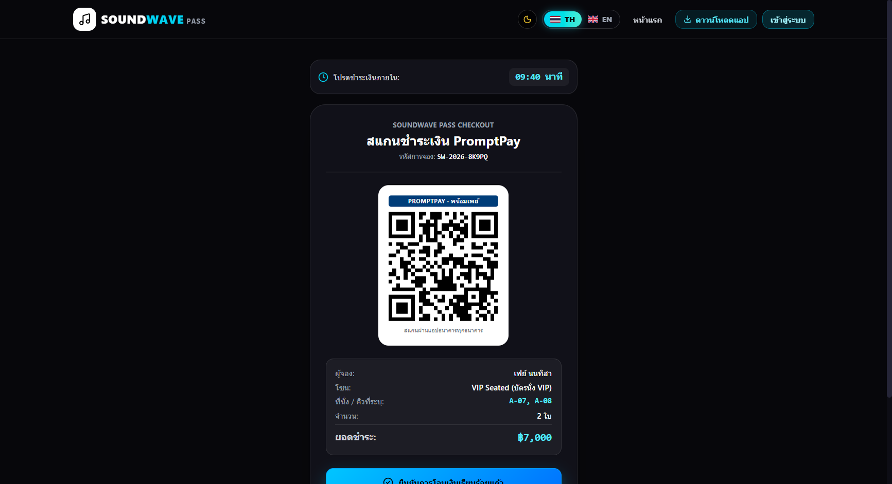
| ชื่อปุ่ม / องค์ประกอบ | ตำแหน่งบนหน้าจอ | หน้าที่การทำงาน | ผลลัพธ์เมื่อกด |
|---|---|---|---|
| 🕒 โปรดชำระเงินภายใน 09:40 นาที | แถบด้านบนสุดของการ์ดชำระเงิน | แสดงเวลาล็อกที่นั่งคงเหลือ (เริ่มต้น 10:00 นาที) | หากหมดเวลา 00:00 ระบบจะยกเลิกใบจองและคืนเก้าอี้ให้ผู้อื่นจองต่ออัตโนมัติ |
| ✅ ยืนยันการโอนเงินเรียบร้อยแล้ว | ปุ่มสีฟ้าขนาดใหญ่ด้านล่างการ์ด | ยืนยันการชำระเงินเพื่อออกตั๋วจริงทันที | เปลี่ยนสถานะใบจองเป็น PAID สร้างรหัสตั๋ว QR Code รายใบ และส่งตั๋วเข้า LINE |
| ✕ ยกเลิกการจองและปล่อยที่นั่งว่าง | ปุ่มด้านล่างสุด | ยกเลิกรายการจองนี้ด้วยตนเองทันทีโดยไม่ต้องรอครบ 10 นาที | คืนโควตาเก้าอี้กลับเข้าผังทันที และพากลับไปหน้าเลือกที่นั่ง |
4.2 หน้าตั๋วดิจิทัล E-Ticket สำหรับแสดงหน้าประตูเข้างาน
URL: /tickets/:ticketCode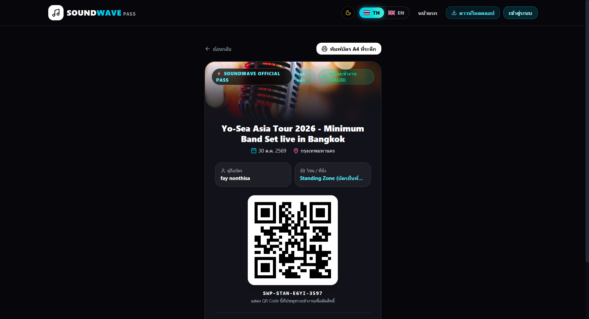
| ชื่อปุ่ม / องค์ประกอบ | ตำแหน่งบนหน้าจอ | หน้าที่การทำงาน | ผลลัพธ์เมื่อกด |
|---|---|---|---|
| ← ย้อนกลับ | มุมซ้ายบนเหนือการ์ดตั๋ว | กลับไปยังหน้าก่อนหน้า | ย้อนกลับไปหน้าประวัติการจองหรือหน้าชำระเงิน |
| 🖨️ พิมพ์บัตร A4 ที่ระลึก | มุมขวาบนเหนือการ์ดตั๋ว | เปิดหน้าแม่แบบบัตรแข็งที่ระลึกขนาด A4 | นำทางไปยังหน้า /tickets/:ticketCode/print (ดูภาพที่ 4.3) |
| QR Code กลางบัตร (SWP-...) | กึ่งกลางการ์ดตั๋ว | ใช้ให้สตาฟฟ์หน้าประตูสแกนเข้างาน | เมื่อสตาฟฟ์สแกนแล้ว สถานะบนบัตรจะเปลี่ยนจาก พร้อมเข้างาน (VALID) เป็น ใช้เข้างานแล้ว (USED) |
4.3 หน้าพิมพ์บัตรที่ระลึกขนาด A4 (Collectible Souvenir Ticket Print)
URL: /tickets/:ticketCode/print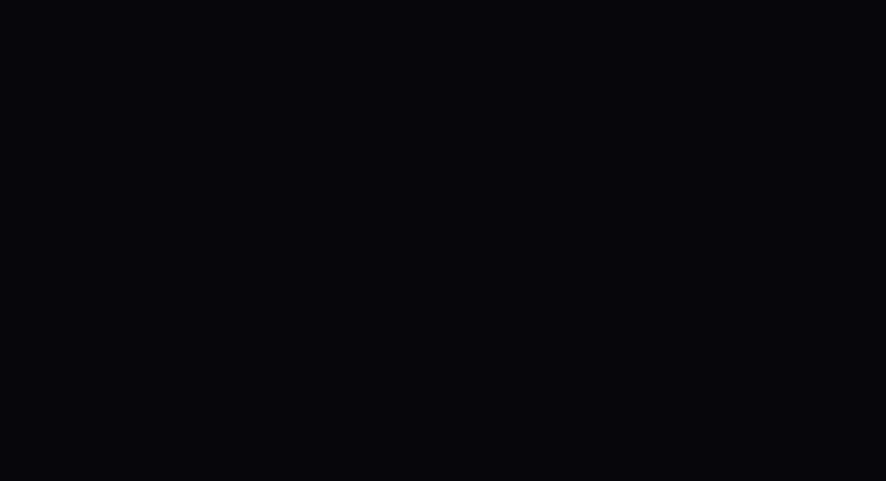
| ชื่อปุ่ม / องค์ประกอบ | ตำแหน่งบนหน้าจอ | หน้าที่การทำงาน | ผลลัพธ์เมื่อกด |
|---|---|---|---|
| 🖨️ สั่งพิมพ์บัตร / บันทึก PDF | มุมขวาบนของหน้าจอ | สั่งพิมพ์บัตรที่ระลึกลงกระดาษ A4 หรือบันทึกเป็นไฟล์ PDF | เปิดหน้าต่าง Print ของเครื่อง (ระบบจะซ่อนปุ่มเมนูด้านบนให้อัตโนมัติเพื่อให้ได้เฉพาะตัวบัตรสวยงาม) |
บทที่ 5
คู่มือสำหรับทีมงานและสตาฟฟ์หน้าประตู (Team Portal & Gate Scanner)
5.1 หน้าทางเข้าสำหรับทีมงานและผู้จัดงาน (Team Portal Page)
URL: /team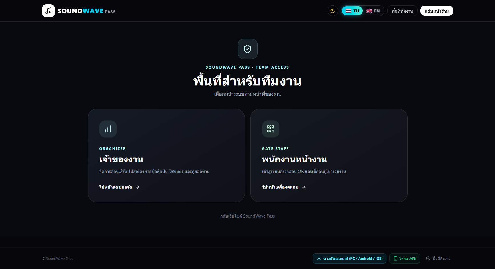
| ชื่อปุ่ม / การ์ด | ตำแหน่งบนหน้าจอ | หน้าที่การทำงาน | ผลลัพธ์เมื่อกด |
|---|---|---|---|
| การ์ด เจ้าหน้าที่หน้าประตู (Gate Scanner) | ฝั่งซ้ายของหน้า /team |
เข้าสู่ระบบเครื่องสแกนตรวจบัตรหน้าประตูฮอลล์ | นำทางไปยังหน้า /scanner |
| การ์ด ผู้จัดงานและแอดมิน (Organizer Portal) | ฝั่งขวาของหน้า /team |
เข้าสู่ระบบแดชบอร์ดจัดการคอนเสิร์ตและยอดขาย | นำทางไปยังหน้า /admin |
5.2 หน้าเครื่องสแกนตรวจตั๋วหน้าประตู (Gate Scanner & Instant Verification)
URL: /scanner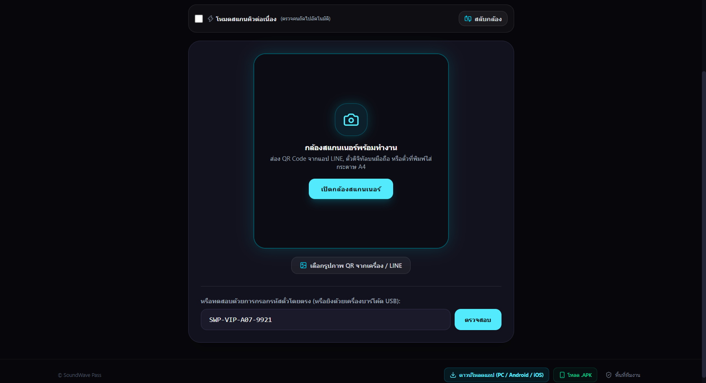
| ชื่อปุ่ม / สวิตช์ | ตำแหน่งบนหน้าจอ | หน้าที่การทำงาน | ผลลัพธ์เมื่อกด |
|---|---|---|---|
| ☑️ โหมดสแกนคิวต่อเนื่อง (ตรวจคนถัดไปอัตโนมัติ) | แถบด้านซ้ายบนเหนือกรอบกล้อง | เปิดโหมดสแกนรัวสำหรับช่วงเวลาที่ผู้ชมต่อคิวเข้าฮอลล์จำนวนมาก | หลังจากสแกนผ่าน 1 ใบ ระบบจะแสดงผลลัพธ์ชั่วครู่แล้วเปิดกล้องพร้อมสแกนคนถัดไปทันทีโดยไม่ต้องกดปุ่มซ้ำ |
| 🔄 สลับกล้อง | มุมขวาบนเหนือกรอบกล้อง | สลับระหว่างกล้องหลังและกล้องหน้าของสมาร์ตโฟน/แท็บเล็ต | เปลี่ยนเลนส์กล้องที่ใช้ส่อง QR Code ทันที |
| 📷 เปิดกล้องสแกนเนอร์ | ปุ่มสีฟ้ากลางกรอบสแกน | เปิดใช้งานกล้องเพื่อส่อง QR Code จากมือถือลูกค้าหรือบัตรกระดาษ A4 | เมื่อตรวจพบ QR Code ระบบจะส่งตรวจสอบและส่งเสียงแจ้งเตือนทันที |
| 🖼️ เลือกรูปภาพ QR จากเครื่อง / LINE | ใต้กรอบกล้อง | อัปโหลดภาพแคปหน้าจอ QR Code เพื่อตรวจบัตรแทนการใช้กล้องสด | อ่านรหัสตั๋วจากไฟล์รูปภาพและแสดงผลการตรวจทันที |
| ช่องพิมพ์รหัสตั๋ว (SWP-...) + ปุ่ม ตรวจตั๋ว | ด้านล่างของหน้า /scanner |
พิมพ์รหัสตั๋วด้วยมือ หรือใช้งานร่วมกับปืนยิงบาร์โค้ด USB |
แสดงป้ายผลลัพธ์ขนาดใหญ่ชัดเจน: • 🟢 สีเขียว (VALID): ตั๋วถูกต้อง อนุญาตให้เข้างานได้ • 🟡 สีเหลือง (USED): ตั๋วใบนี้ถูกสแกนเข้างานไปแล้ว (ป้องกันการวนบัตรซ้ำ) • 🔴 สีแดง (INVALID): รหัสไม่ถูกต้อง หรือบัตรถูกยกเลิก/คืนเงินแล้ว |
บทที่ 6
คู่มือสำหรับผู้จัดงานและผู้ดูแลระบบ (Organizer & Admin Dashboard)
6.1 แท็บที่ 1: ภาพรวมระบบ ยอดขาย และการ์ด KPI ทั้ง 4 ใบ
URL: /admin (Tab: ภาพรวม & ยอดขาย)| ชื่อปุ่ม / การ์ด | ตำแหน่งบนหน้าจอ | หน้าที่การทำงาน | ผลลัพธ์เมื่อกด |
|---|---|---|---|
| แถบ 4 แท็บหลัก (ภาพรวม / คอนเสิร์ต / รายการจอง / + เพิ่มงานใหม่) | ใต้หัวข้อ แผงควบคุมและสถิติคอนเสิร์ต | สลับหมวดการทำงานหลักของผู้จัดงาน | เปลี่ยนหน้าจอการทำงานตามแท็บที่เลือกทันที |
| 📡 เรดาร์คอนเสิร์ต 🔔 58 | ถัดจากแถบแท็บด้านขวาบน | เปิดระบบเรดาร์ค้นหาคอนเสิร์ตใหม่ในไทยอัตโนมัติ | เปิดหน้าต่างป๊อปอัพเรดาร์คอนเสิร์ต (ดูภาพที่ 6.4) |
| การ์ด KPI ทั้ง 4 ใบ (ตั๋วที่ขายแล้ว, รายได้รวม, สแกนเข้างานแล้ว, คอนเสิร์ตในระบบ) | แถวบนของแดชบอร์ด | แสดงสถิติสำคัญแบบเรียลไทม์ (สามารถคลิกที่การ์ดแต่ละใบได้) | คลิกแล้วนำทางไปยังหน้าเจาะลึกสถิติ /admin/insights/:type |
| ⬇ ส่งออก CSV ทั้งหมด / รีเฟรชข้อมูล | มุมขวาเหนือการ์ดสรุปการเงิน | ดาวน์โหลดรายงานผู้เข้างานทั้งหมดเป็นไฟล์ Excel CSV หรืออัปเดตตัวเลขล่าสุด | ดาวน์โหลดไฟล์ .csv ลงเครื่อง หรือดึงข้อมูลใหม่จากเซิร์ฟเวอร์ |
6.2 แท็บที่ 2: จัดการคอนเสิร์ต สวิตช์เปิด-ปิดการขาย และตารางโซนบัตร
URL: /admin (Tab: คอนเสิร์ต & ผังที่นั่ง)| ชื่อปุ่ม / สวิตช์ | ตำแหน่งบนการ์ดคอนเสิร์ต | หน้าที่การทำงาน | ผลลัพธ์เมื่อกด |
|---|---|---|---|
| ▶ เปิดขาย · ⏸ พักการขาย · ⏺ ปิดขาย | มุมซ้ายบนของแต่ละคอนเสิร์ต | ควบคุมสถานะการจำหน่ายบัตรของคอนเสิร์ตนั้นทั้งงานในคลิกเดียว | อัปเดตสถานะหน้าร้านทันที (หากเลือกพักหรือปิดขาย ลูกค้าจะกดจองไม่ได้) |
| ✏️ แก้ไขข้อมูล · 📋 คัดลอกลิงก์ร้าน · ⬇ ส่งออก CSV · 🎤 จัดการศิลปิน | มุมขวาบนของการ์ดคอนเสิร์ต | แก้ไขรายละเอียดงาน คัดลอกลิงก์หน้าขายบัตร ดาวน์โหลดรายชื่อผู้ชมของงานนั้น หรือจัด Lineup ศิลปิน | เปิดหน้าต่างแก้ไขข้อมูล หรือดาวน์โหลดไฟล์ CSV เฉพาะงานนั้น |
| 🪑 ผังที่นั่ง Interactive | คอลัมน์ขวาสุดของแต่ละโซนที่นั่ง | เปิดหน้าต่างควบคุมเก้าอี้รายตัว ล็อกแถว VIP และคืนเงินตั๋ว | เปิดป๊อปอัพผังที่นั่งแอดมิน (ดูภาพที่ 6.3) |
6.3 หน้าต่างผังที่นั่งแอดมิน: ล็อกเก้าอี้ VIP ล็อกทั้งแถว และคืนเงิน (Admin Seat Map Modal)
Modal: AdminSeatMapModal.jsx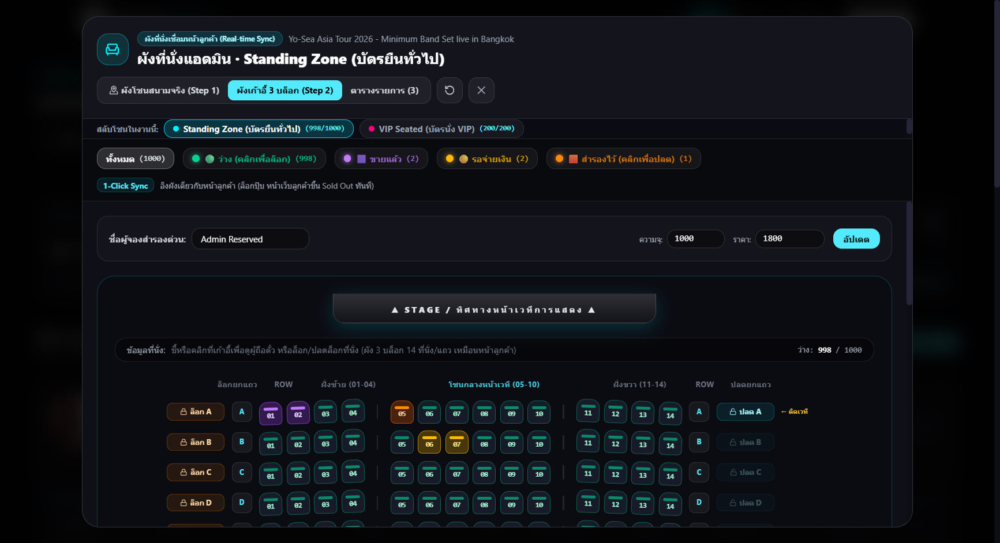
| ชื่อปุ่ม / องค์ประกอบ | ตำแหน่งในหน้าต่างผังที่นั่ง | หน้าที่การทำงาน | ผลลัพธ์เมื่อกด |
|---|---|---|---|
| แท็บมุมมอง: ผังเก้าอี้รายตัว · ผังฮอลล์รวม · ตารางรายชื่อ | แถบเครื่องมือด้านบน | สลับรูปแบบการดูข้อมูลที่นั่งในโซนนั้น | แสดงผังเก้าอี้ A–G, ผังเวทีรวม หรือตารางรายชื่อผู้ถือบัตร |
| ช่อง ความจุรวม + ราคาบัตร + ปุ่ม บันทึก | แถบตั้งค่าโซนด้านบน | ปรับเพิ่ม/ลดจำนวนที่นั่งทั้งหมด หรือเปลี่ยนราคาบัตรของโซน | บันทึกความจุและราคาใหม่ลงฐานข้อมูลทันที |
| ปุ่ม 🔒 ล็อกแถว / 🔓 ปลดล็อกแถว | ด้านขวาสุดของแต่ละแถวเก้าอี้ (A–G) | ล็อกที่นั่งว่างทั้งแถวให้เป็นโควตา VIP / สปอนเซอร์ในคลิกเดียว | เก้าอี้ว่างทั้งแถวเปลี่ยนเป็นสถานะ สำรองโดยแอดมิน (RESERVED) ทันที |
| ปุ่มเก้าอี้รายตัว + แผงจัดการด้านขวา | กลางผังที่นั่งและคอลัมน์ขวา | คลิกที่เก้าอี้ตัวใดก็ได้เพื่อดูชื่อผู้ซื้อ รหัสตั๋ว หรือสั่งล็อก/คืนเงิน |
• กรณี เก้าอี้ว่าง: กดปุ่ม 🔒 ล็อกที่นั่งนี้ เพื่อกันที่นั่งให้แขก VIP• กรณี ขายแล้ว (VALID): กดปุ่ม 💸 คืนเงินและยกเลิกตั๋ว (Refund) เพื่อยกเลิกบัตรและคืนเก้าอี้กลับมาขายใหม่
|
6.4 หน้าต่างเรดาร์ค้นหาคอนเสิร์ตใหม่และนำเข้าอัตโนมัติใน 1 คลิก (Concert Discovery Radar)
Modal: ConcertDiscoveryModal.jsx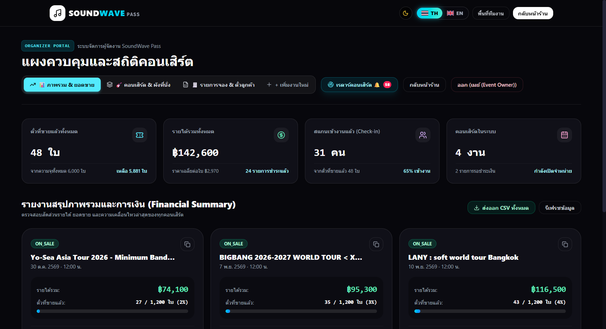
| ชื่อปุ่ม / องค์ประกอบ | ตำแหน่งในหน้าต่างเรดาร์ | หน้าที่การทำงาน | ผลลัพธ์เมื่อกด |
|---|---|---|---|
| 🔄 สแกนสดเดี๋ยวนี้ (Live Scan) | มุมขวาบนของป๊อปอัพเรดาร์ | สั่งกวาดข้อมูลคอนเสิร์ตใหม่ล่าสุดจากแหล่งข้อมูลภายนอก (เช่น ThaiTicketMajor) | อัปเดตรายการคอนเสิร์ตมาใหม่พร้อมแสดงจำนวนงานที่ยังไม่ได้นำเข้า |
| ⬇ นำเข้าและเปิดขายทันที (1-Click Import) | ด้านล่างของการ์ดคอนเสิร์ตแต่ละรายการ | ดึงชื่อคอนเสิร์ต โปสเตอร์ วันเวลา สถานที่ และสร้างโซนที่นั่งมาตรฐานให้อัตโนมัติ | คอนเสิร์ตถูกสร้างเข้าสู่ระบบและขึ้นแสดงบนหน้าแรกให้ลูกค้าจองบัตรได้ทันที |
6.5 แท็บที่ 3: รายการจอง ข้อมูลผู้ถือตั๋ว และปุ่มส่งตั๋วเข้า LINE ซ้ำ
URL: /admin (Tab: รายการจอง & ตั๋วลูกค้า)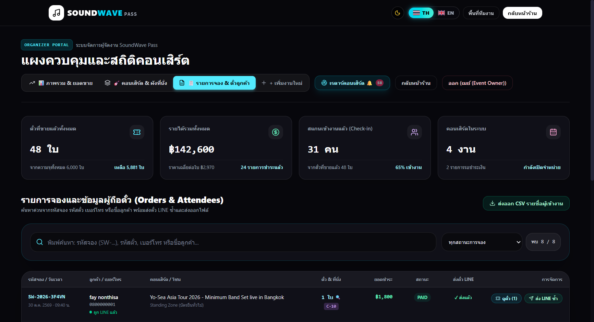
| ชื่อปุ่ม / ช่องค้นหา | ตำแหน่งในแท็บรายการจอง | หน้าที่การทำงาน | ผลลัพธ์เมื่อกด |
|---|---|---|---|
| 🔍 ช่องพิมพ์ค้นหา + ตัวกรองสถานะการจอง | แถบค้นหาด้านบนตาราง | ค้นหาจากรหัสจอง (SW-...), รหัสตั๋ว, เบอร์โทร หรือชื่อลูกค้า |
กรองแถวรายการจองในตารางแบบเรียลไทม์ทันทีที่พิมพ์ |
| 🎫 ดูตั๋ว (X) | คอลัมน์การจัดการ (ขวาสุดของแต่ละแถว) | เปิดดูรายการตั๋วทุกใบที่อยู่ในใบจองนั้น พร้อมปุ่มคืนเงินรายใบ | เปิดหน้าต่างป๊อปอัพแสดงรายละเอียดตั๋วแต่ละใบ |
| ✈️ ส่ง LINE ซ้ำ | คอลัมน์การจัดการ (ข้างปุ่มดูตั๋ว) | ยิงการ์ดตั๋ว Flex Message เข้าแชท LINE ของลูกค้าซ้ำอีกครั้ง | ส่งตั๋วเข้า LINE ลูกค้าทันที (ใช้เมื่อลูกค้าทำแชทหายหรือเพิ่งกดเพิ่มเพื่อนบอท) |
6.6 แท็บที่ 4: ฟอร์มสร้างคอนเสิร์ตใหม่ กำหนดพิกัดแผนที่ และตั้งค่าโซนบัตร
URL: /admin (Tab: + เพิ่มงานใหม่)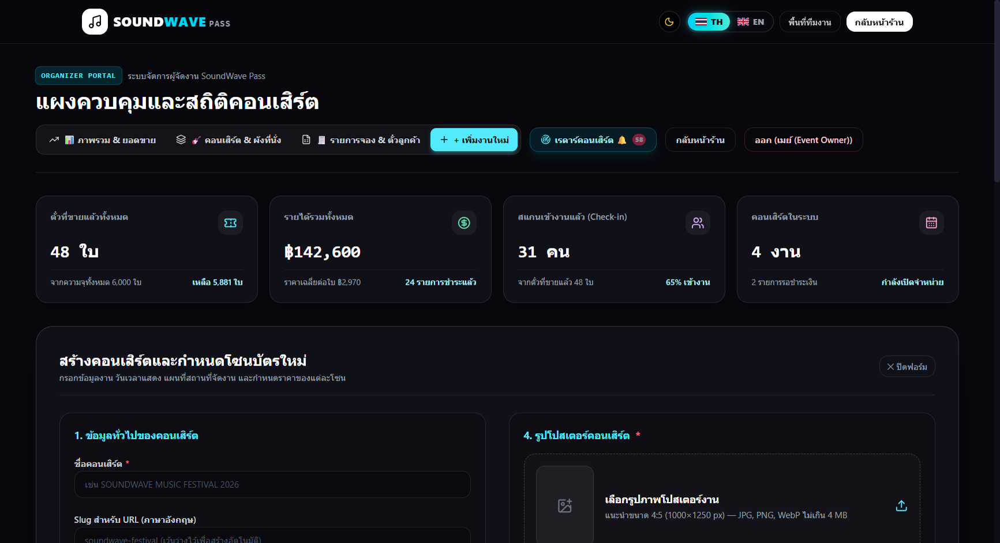
| ชื่อปุ่ม / ช่องกรอก | ตำแหน่งในฟอร์มสร้างงาน | หน้าที่การทำงาน | ผลลัพธ์เมื่อกด |
|---|---|---|---|
| ช่องชื่อคอนเสิร์ต, Slug URL, วันเวลา และสถานที่ | ส่วนข้อมูลหลักด้านบน | กรอกข้อมูลพื้นฐานของงานคอนเสิร์ตและเลือกวันเวลาจัดแสดงจากปฏิทิน | ระบบสร้าง URL Slug อัตโนมัติและผูกพิกัดแผนที่สถานที่จัดงาน |
| อัปโหลดไฟล์โปสเตอร์ / วางลิงก์รูปภาพ | ส่วนรูปภาพโปสเตอร์งาน | เลือกรูปภาพจากเครื่องพร้อมเปิดหน้าต่างครอปตัดภาพ (Crop Modal) | แสดงตัวอย่างภาพโปสเตอร์และอัปโหลดขึ้นเซิร์ฟเวอร์ |
| + เพิ่มโซนที่นั่ง / ปุ่มบันทึกสร้างคอนเสิร์ต | ส่วนกำหนดโซนบัตรด้านล่าง | กำหนดชื่อโซน ประเภท (บัตรนั่ง/บัตรยืน/VIP) ราคา ความจุ และสีประจำโซน | สร้างงานคอนเสิร์ตใหม่พร้อมผังที่นั่งขึ้นแสดงบนหน้าเว็บทันที |
บทที่ 7
การแก้ไขปัญหาเบื้องต้นและคำถามที่พบบ่อย (Troubleshooting & FAQ)
💡 คำถามที่ 1: ลูกค้าชำระเงินแล้วแต่ไม่ได้รับตั๋วในแอป LINE ต้องทำอย่างไร?
1. ลูกค้าสามารถเปิดดูตั๋ว QR Code บนเว็บได้ทันทีโดยกดปุ่ม "ตั๋วของฉัน" บนแถบเมนูด้านบน หรือค้นหาด้วยเบอร์โทรศัพท์
2. หากต้องการให้ตั๋วเข้าแชท LINE ให้ลูกค้ากดเพิ่มเพื่อน LINE Official Account ของงานก่อน จากนั้นแจ้งแอดมินให้กดปุ่ม "✈️ ส่ง LINE ซ้ำ" ในหน้า
1. ลูกค้าสามารถเปิดดูตั๋ว QR Code บนเว็บได้ทันทีโดยกดปุ่ม "ตั๋วของฉัน" บนแถบเมนูด้านบน หรือค้นหาด้วยเบอร์โทรศัพท์
2. หากต้องการให้ตั๋วเข้าแชท LINE ให้ลูกค้ากดเพิ่มเพื่อน LINE Official Account ของงานก่อน จากนั้นแจ้งแอดมินให้กดปุ่ม "✈️ ส่ง LINE ซ้ำ" ในหน้า
/admin แท็บรายการจอง
💡 คำถามที่ 2: ลูกค้ากดเลือกที่นั่งค้างไว้แล้วปิดหน้าเว็บไป เก้าอี้ตัวนั้นจะว่างเมื่อไหร่?
ระบบมีกลไกล็อกที่นั่งชั่วคราว 10 นาที หากไม่มีการกดยืนยันชำระเงินภายในเวลาดังกล่าว ระบบจะปลดล็อกเก้าอี้ตัวนั้นกลับเข้าผังกลางให้ลูกค้าท่านอื่นเลือกซื้อต่อได้โดยอัตโนมัติ หรือแอดมินสามารถปลดล็อกจากหน้าผังที่นั่งได้ทันที
ระบบมีกลไกล็อกที่นั่งชั่วคราว 10 นาที หากไม่มีการกดยืนยันชำระเงินภายในเวลาดังกล่าว ระบบจะปลดล็อกเก้าอี้ตัวนั้นกลับเข้าผังกลางให้ลูกค้าท่านอื่นเลือกซื้อต่อได้โดยอัตโนมัติ หรือแอดมินสามารถปลดล็อกจากหน้าผังที่นั่งได้ทันที
💡 คำถามที่ 3: หน้างานอินเทอร์เน็ตช้าหรือกล้องมือถือสตาฟฟ์มีปัญหา จะตรวจบัตรอย่างไร?
ในหน้า
ในหน้า
/scanner สตาฟฟ์สามารถพิมพ์รหัสตั๋ว (เช่น SWP-VIP-...) ลงในช่องค้นหาด้านล่าง ใช้เครื่องยิงบาร์โค้ด USB หรือกดปุ่ม "เลือกรูปภาพ QR จากเครื่อง" เพื่อตรวจบัตรได้ทันที